六子或六子以上的連線。
白方沒禁手，白長連也算勝。
雙四或稱四四：
一子同時形成二個四，無論是活四或死四。
另外四四有可能形成在同一線上
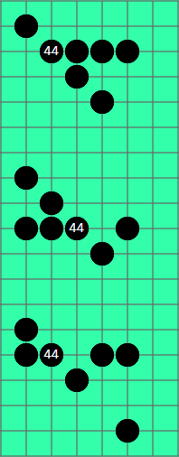

一子同時形成二個活三，
且此子為兩個活三的交點。
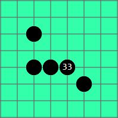
※黑方下出禁手判黑敗，白方沒有限制，白長連也算勝。
※黑方下出五同時出現禁手，判黑勝，五最大。
※三個三、三個四、四三三、四四三、同樣為黑棋禁手。
黑棋的三種禁手包含長連、雙四、雙活三，以下簡單介紹
| 長連： 六子或六子以上的連線。 白方沒禁手，白長連也算勝。 |
|
雙四或稱四四：
|
 |
| 雙活三或簡稱雙三： 一子同時形成二個活三， 且此子為兩個活三的交點。 |
 |
有禁規則之下，白方棋型的定義與無禁手規則相同，但黑方棋型，但因長連禁手的影響而有差異。
黑方差異主要有兩點
１.判斷子力延伸的方向，是否可能形成長連。
２.活三的定義，除了次一手可形成活四，且限制活四點，不可同時形成五或禁手。
以下介紹，有禁規則下，黑方活四、死四、活三判斷。
至於黑方死三、活二、死二、活一、死一，同樣也受長連影響，
但這幾個棋型和禁點判斷無關，就不贅述。
| 棋型 | 圖例 |
| 活四： 次一手兩端皆可形成五。 要注意Ｘ點不可以有黑子 |
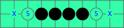 |
死四： |
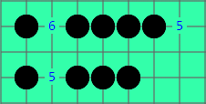 |
不算四： |
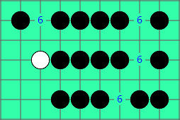 |
活三： |
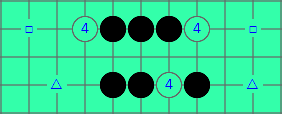 |
不算活三： |
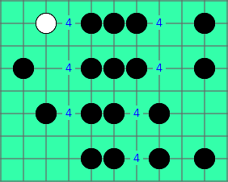 |
不算活三： △△△的活四點，往左會形成五，往右會形成雙活三禁手 |
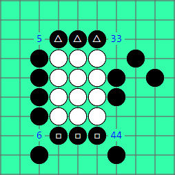 |
因活三的定義變複雜，因此判斷雙三禁，有可能出現很複雜的局面，另在多重禁手篇詳述。
Ａ點直的是四，橫的會變長連，不能形成五，不算四，所以不是四四禁
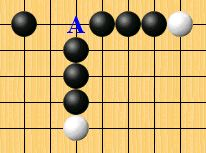
Ａ點直的是活三，橫的不是活三，因不能形成活四，不算禁手。
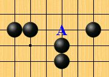
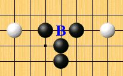
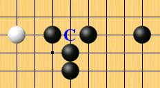
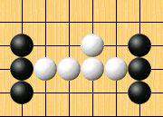
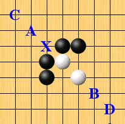